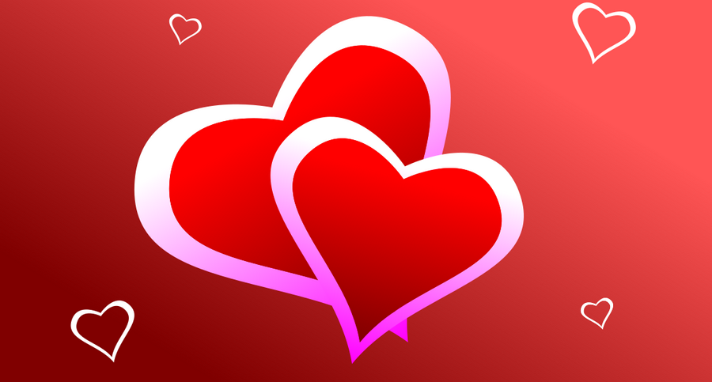

Rasterização
O processo de rasterização consiste em converter vetores em bitmaps, a forma mais comum de rasterização é a exportação do desenho como imagem, como já viemos fazendo, mas alguns softwares por possuírem mais recursos internos de edição de bitmaps podem ter a opção de converter em imagem dentro do próprio desenho como no caso do CorelDraw, onde este recurso se chama Converter em Bitmap.
Durante a exportação em bitmap de um desenho, alguns fatores devem ser levados em conta, como por exemplo, a finalidade que a imagem terá e a resolução necessária, por exemplo:
Quanto à resolução, para exibição em sites por exemplo, uma imagem com 1280 pixels de largura por 720 pixels de altura, pode ter uma resolução entre 150 e 300dpi (pontos por polegada). Para impressão em gráfica pode ser necessária uma resolução e um tamanho maior, o que deixaria o arquivo obviamente maior também. Para ícones, o tamanho e a resolução podem ser menores.
Quanto ao formato, será necessária uma pesquisa sobre que formato você necessita, mas posso passar algumas informações que te ajudarão nessa pesquisa:
JPG
O formato .jpg ou .jpeg é um formato de bitmap que é usado largamente na informática e se encaixa na maioria das situações. É um formato de imagem compactada e leve de se utilizar que, no entanto, não suporta fundo transparente. Toda transparência no momento da exportação é convertida em fundo branco. Praticamente todo tipo de aplicação e serviço web suporta o formato .jpeg.
PNG
O formato .png é um formato de bitmap que garante maior resolução e qualidade no arquivo, para trabalhos profissionais é o formato mais recomendado, além do fato de suportar fundos transparentes, ideal para ícones e ser suportado por praticamente todos os softwares e serviços web.
TIFF
O formato .tiff é um formato de bitmap que dá suporte além de transparência também a camadas. Essa possibilidade ajuda a organizar os desenhos dentro do arquivo para ser editado em softwares como o Photoshop. É preciso verificar se a aplicação de destino dá suporte a este formato.
ICO
O formato .ico é um formato de bitmap com fundo transparente utilizado em ícones em certas aplicações e serviços web, em alguns casos este será o único formato suportado. Infelizmente nem todas as aplicações dão suporte à exportação neste formato. Atualmente o CorelDraw possui essa possibilidade, além do fato de que é possível utilizar serviços online para converter imagens .png em .ico.
SVG
O formato .svg é um formato de vetor universal, o que garante a resolução nativa do vetor e a manutenção de efeitos e transparências assim como estavam no software. Nem toda aplicação dá suporte ao formato svg, no entanto este formato garante perfeita aplicabilidade para ícones.
O formato .svg serve ainda como uma ponte entre aplicações, pois por ser um formato universal pode ser importado por qualquer aplicação de desenho vetorial e posteriormente editado, por conter todas as curvas originais.
AI
O formato .ai é o formato de vetor nativo do Adobe Illustrator, algumas aplicações dão suporte à importação e exportação neste formato como é o caso do CorelDraw, no entanto formatos nativos de aplicações em particular podem não funcionar como se deseja em outras aplicações que não sejam a original para a qual foi criado. O formato .ai dos arquivos do Illustrator é o formato do arquivo editável, muitas vezes o editável é o arquivo que será exigido do designer por quem contratou a arte, sendo a imagem exportada apenas uma forma rápida de visualização.
CDR
O formato .cdr é o formato de vetor nativo do CorelDraw, algumas aplicações dão suporte a esse formato, até o momento em que esta apostila foi escrita o Illustrator não fornece este suporte. O formato .cdr é o formato dos arquivos editáveis salvos no CorelDraw e podem não se comportar como se espera em outras aplicações.
Prepare-se para formatos modernos
A tecnologia está avançando rapidamente, com isso, existe uma tendência de universalização do formato SVG, com suporte em cada vez mais softwares, por ser um formato leve, prático e vetorial, garantindo fidelidade nativa, além disso, os formatos modernos WEBP para imagens, cada vez mais substituirá os formatos JPG, PNG entre outros, e o WEBM para vídeos vem substituir o GIF, MP4, MOV etc. Verifique a possibilidade de utilizá-los e dê preferência. Os formatos .webp e .webm tornam os arquivos ao mesmo tempo mais leves e com maior resolução por serem otimizados.

Neste desafio você terá de redesenhar a imagem abaixo, você pode utilizar a imagem com nome Hearths.png da pasta de imagens do curso. Note que todos os preenchimentos da arte são gradientes. Veremos ainda neste curso noções de simetria, mas você já pôde perceber que objetos simétricos (que os dois lados são exatamente iguais), podem ser desenhados pela metade e posteriormente duplicados e unidos por operação booleana.
Para baixar as imagens e outros arquivos do curso, clique na Sessão de Downloads no final do Índice.
Salve seu arquivo .svg e exporte a imagem em formato .png.
Não vale rastrear a imagem! É preciso redesenhar sobre ela.